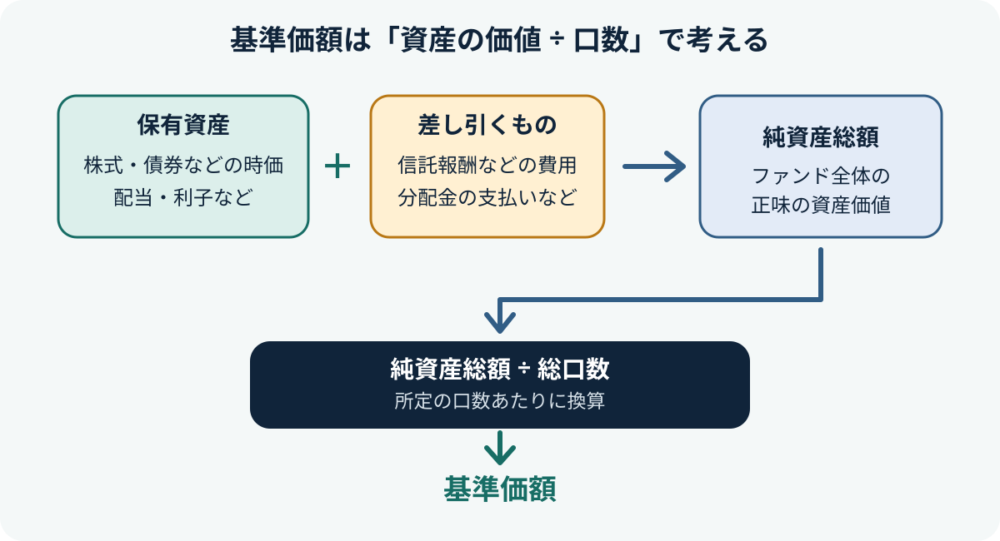

投資信託の基準価額とは？1万口あたりの価格と値動きの見方
基準価額は、投資信託の値段にあたるものです。保有している株式や債券などの値動き、為替、配当・利子、費用などが反映されます。数字が高い・低いだけで「割高・割安」や、良い商品かどうかを判断しないことが大切です。

- 基準価額は投資信託の値段で、株式のように取引時間中ずっと動く価格とは異なり、通常は1日1回算出・公表されます。
- 一般的な追加型投資信託では「1万口あたり」で表示されることが多いものの、表示単位は商品によって確認が必要です。
- 基準価額の高さだけでは、運用成績や割安さは判断できません。投資対象・リスク・費用・分配金をあわせて確認します。
1. 基準価額とは？
基準価額は、投資信託の値段を表す指標です。投資信託が保有する株式や債券などの時価、配当金や利子などの収入、運用にかかる費用などを反映して計算されます。購入や換金の際の基準となります。
投資信託の注文では、株式のように注文時点で最終的な価格が確定しているとは限りません。多くの投資信託では、注文を受け付けた後に決まる基準価額が適用されます。海外資産を含む商品などは、注文締切時刻や価格決定のタイミングにも注意しましょう。
2. 基準価額はどう計算される？
基本的には、投資信託の資産から負債を差し引いた「純資産総額」を、投資信託全体の口数で割って、所定の口数あたりに換算します。
純資産総額 ÷ 総口数 ＝ 1口あたりの価額
1万口あたりで表示する場合は、1口あたりの価額を10,000倍します（当初元本が1口＝1円の場合）。
純資産総額には、保有資産の時価や配当・利子などの収入が反映され、信託報酬などの費用や分配金の支払いも影響します。実際の表示単位や計算方法の詳細は、商品資料で確認してください。
3. なぜ「1万口あたり」で表示される？
投資信託では「口（くち）」が取引単位として使われます。当初元本が1口＝1円の投資信託では、1万口あたりの基準価額が1万円からスタートする形式が一般的です。運用によって資産価値が変わると、基準価額も変動します。
たとえば、1万口あたりの基準価額が12,000円なら、1万口を保有する場合の評価額は、単純化すると12,000円です。実際の保有評価額は保有口数に応じて計算され、換金時には適用される基準価額や税金・費用などの条件も関係します。
4. 基準価額が動く主な理由
- 投資先の価格変動：株式・債券・REITなどの価格が上がったり下がったりする。
- 為替変動：為替ヘッジなしの海外資産では、円換算した価値が為替の影響を受ける。
- 配当・利子などの収入：資産から得た収入が反映される。
- 費用：信託報酬など運用・管理にかかる費用が差し引かれる。
- 分配金の支払い：分配金を支払うと、その分だけ純資産総額が減少する要因になる。
投資信託に資金が集まったという理由だけで、通常、基準価額がそのまま上がるわけではありません。資金流入は純資産総額を増やすことがありますが、基準価額は純資産総額と総口数の関係で計算されるためです。
5. 基準価額が高い商品ほど良い？
基準価額の数字が大きい商品ほど優れている、あるいは小さい商品ほど割安というわけではありません。基準価額は設定時点や分配金の支払い、運用経過などによって異なり、異なる投資信託の数字をそのまま比べても商品の良し悪しは判断できません。
比較するなら、投資対象や運用方針が近い商品を選び、同じ期間の騰落率、費用控除後の運用状況、ベンチマークとの差、リスク、分配金を含むトータルリターンなどを確認します。分配金が支払われると基準価額はその分下がることがあるため、基準価額の推移だけで成果を判断しないようにしましょう。
6. 購入・売却時に確認したいこと
- 最新の基準価額と基準日（いつ時点の数字か）
- 注文締切時刻と、どの日の基準価額が適用されるか
- 投資対象資産・地域、為替ヘッジの有無
- 信託報酬やその他費用、購入・換金時の条件
- 分配金の方針と、分配金を含めた運用成果
基準価額は運用会社や販売会社のウェブサイト、商品資料などで確認できます。商品を詳しく調べるときは、最新の交付目論見書や運用報告書も参照しましょう。
7. よくある質問
基準価額は毎秒変わりますか？
一般的な投資信託の基準価額は通常1日1回算出・公表され、株式の市場価格のように取引時間中ずっと更新されるものではありません。商品によって算出・公表のタイミングは異なります。
基準価額が下がったら、必ず運用が失敗していますか？
必ずしもそうとは限りません。投資対象の市場価格や為替の変動、分配金の支払いなど複数の要因が影響します。比較する場合は、投資対象や期間をそろえ、分配金を含む成果やベンチマークも確認しましょう。
基準価額が1万円より低い商品は買いやすいですか？
基準価額の数字が小さいこと自体は、割安さや将来の値上がり余地を意味しません。商品の投資対象、運用方針、費用、リスクを確認して判断します。
公式情報・参考資料
- 資産運用業協会：投資信託の基礎知識 — 基準価額の計算、値動き、情報の入手先
- J-FLEC：基準価額 — 基準価額の意味と計算の考え方
- 資産運用業協会：口座開設・購入・運用中の知識 — 口数、基準価額、情報の確認方法
- J-FLEC：ETFと投資信託の違い — 注文時点と価格決定の違い
まとめ
基準価額は投資信託の値段であり、保有資産の価格、為替、収入、費用、分配金などが反映されます。数字の高さだけで判断せず、投資対象・リスク・費用・分配金を確認し、同じ条件の商品や期間で比較することが大切です。